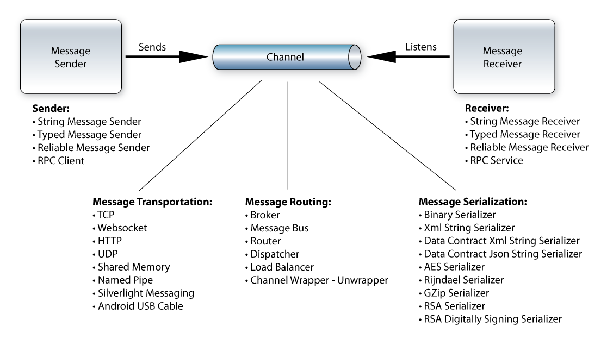

Welcome to the Eneter.Messaging.Framework, the cross-platform message oriented middleware.
Eneter Messaging Framework is a lightweight framework for the interprocess communication.
It is easy to use and it works across multiple platforms.
Supported Platforms
The framework is available for various platforms. Therefore you can use it for the communication between applications from the same platform
as well as for the communication between applications running on different platforms.
Communication across following platforms is supported:
-
Java 6
-
Android 2.1 (or later)
-
.NET 3.5, 4.0, 4.5
-
Windows Phone 7, 7.1, 8.0, 8.1
-
Compact Framework 2.0, 3.5
-
Silverlight 3, 4, 5
-
Mono 2.6.4
Protocols
The framework for Java and Android supports following protocols and transportation mechanisms:
-
TCP - for communication between processes running on different machines.
-
Websocket - for communication between processes running on different machines. It provides true bi-directional, full-duplex communication in environments which block non-standard Internet connections using a firewall.
-
HTTP - for communication between processes running on different machines. It works in environments blocking non-standard Internet connections using a firewall.
-
UDP - for communication between processes running on different machines. Short and fast messaging (delivery of packets is not guaranteed).
-
Android USB Cable - for communication between computer and Android device connected via the USB cable.
-
Thread Messaging - for communication between threads running in the same process.
Message Serialization
Communicated messages are encoded by a serializer. To serialize/deserialize messages the framework for Java and Android supports:
-
XML Serializer - serialization to XML (works for the communication between Java and .NET).
-
Binary Serializer - for fast serialization using the binary format (does not work for the communication between Java and .NET).
-
AES Serializer - for encrypting using Advanced Encryption Standard (works for the communication between Java and .NET).
-
GZip Serializer - for compressing big messages before sending across the network (works for the communication between Java and .NET).
-
RSA Serializer - for encrypting messages by RSA algorithm using public and private keys (works for the communication between Java and .NET).
-
RSA Digitally Signing Serializer - for using digital signature to verify who sent the message and that the message was not changed (works for the communication between Java and .NET).
-
Protocol Buffer Serializer - for very fast cross-platform binary serialization(works for the communication between Java and .NET).
The communication API is not bound to a particular protocol or encoding format, therefore your implementation stays same, does not matter what you use.
Sending-Receiving Messages
To implement the communication between applications the framework provides functionality to send and receive messages
as well as the communication using RPC (Remote Procudure Calls):
-
String Messages - for sending and receiving text messages.
-
Typed Messages - for sending and receiving data structures of specified types.
-
Remote Procedure Calls - for invoking methods or subscribing events in another application. (Works accross platforms!)
Routing Messages
It provides components to control routing of messages between applications:
-
Message Bus - for publishing multiple services from one place.
-
Broker - for publish-subscribe scenarios (publisher sends messages to the broker and the broker notifies all subscribers).
-
Dispatcher - for routing messages to all connected receivers (e.g. for a service listening to TCP and HTTP at the same time).
-
Channel Wrapper/Unwrapper - for receiving multiple type of messages on one address (no need for if ... else ... statement in the user code).
-
Load Balancer - for distributing workload across more computers (or processes).
Reliability
The communication across the network is typically less reliable as a local call inside the process. The network connection can be interrupted or receiving application can be temporarily unavailable. If your communication scenario requires to overcome these issues, the framework provides:
Security
The communication across the network is easy to observe and confidential data can be acquired by unauthorized persons. Therefore, you may want to protect your data:
Eneter Communication for Java and Android
